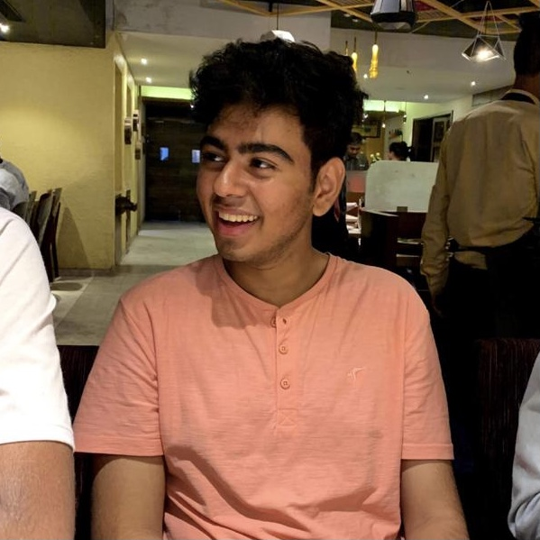

TOO MUCH PLEASURE IS PAIN.
By Krishang Parekh
August 17, 2020
I know that the blog is supposed to be something about positivity or happiness, and by the title I may be sounding like a PARENT, but sweetie, "Welcome to the real world, it sucks, you're gonna love it!".
In a new world of evolution everybody wants to think positively but most of them are fearful to speak the truth. Don't be afraid to be who you are, but also keep improving. Learn to live, learn to love, learn to learn and learn to leave a legacy.
Most of us come across one question in our life, "Why does bad stuff happen to good people?". This makes us think if we should stop being good to others? Well my answer to this would be that no Diamond can be polished without friction, no Gold can be purified without fire and similarly every Good Person goes through Trials. Only with that experience does life become better and not bitter. Sometimes life gives you tests first and the lessons later so keep faith and never stop being a good person.
Here's an unpopular opinion, your private conversations with your friends should be about health, wealth, and progressing your range of knowledge. If it's about other people and how they are living -- YOU REALLY NEED NEW FRIENDS. I'm not saying this to help you make a better future, but so that you can make the most of your present and not have any regrets later. If you start now, you'll begin seeing the results a day earlier than if you start tomorrow.
If you ever feel that life holds you back it's only because one day it will definitely hold you up. This is important for every single person reading this as life never gives you anything called as CONSTANT MOTIVATION! You need to understand that enjoying what you're doing at the present moment is the primary key to happiness and happiness is the biggest inspiration one can pray for. Work on stuff that makes you an outstanding individual in every aspect be it mentally or spiritually.
STOP JUDGING OTHERS AND START ADAPTING from them. It's okay to be a follower and not being a leader, but what's more important is to be religiously dedicated at whatever you do and oberve everything around you. It's not WHAT some people do that makes them special, it's HOW DIFFERENTLY they do what MOST ordinary people do that makes them who they are.
Life is not easy but learn to REST and not QUIT. Dream of unimaginable things to do and work on it because real dreams aren't those that come in your sleep but are those that don't allow you to sleep. I'd love to end with my college motto "ASPIRE TO ACHIEVE" which coincidentally resembles my school motto as well, "ASPIRE ATTEMPT ACHIEVE!"
Wish everyone of you all the hapiness in the world and may all your dreams and aspirations come true. Keep hustling and keep achieving!
About Krishang
I am a 19 year old in the second year of my IT Engineering. I love memes, music and my mom (needless to say I love my dad equally but I wouldn't like to break the alliteration.) I have a plethora of talent and I love trying out new hobbies which brings me here, writing my first ever blog and I hope you like it.